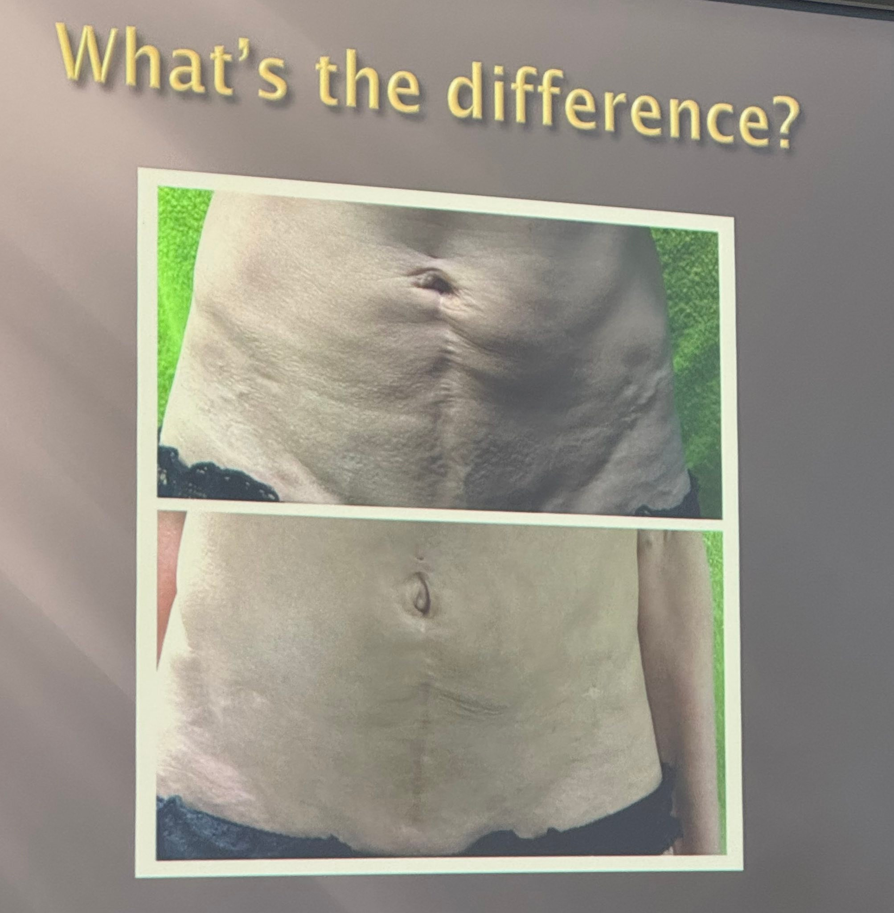
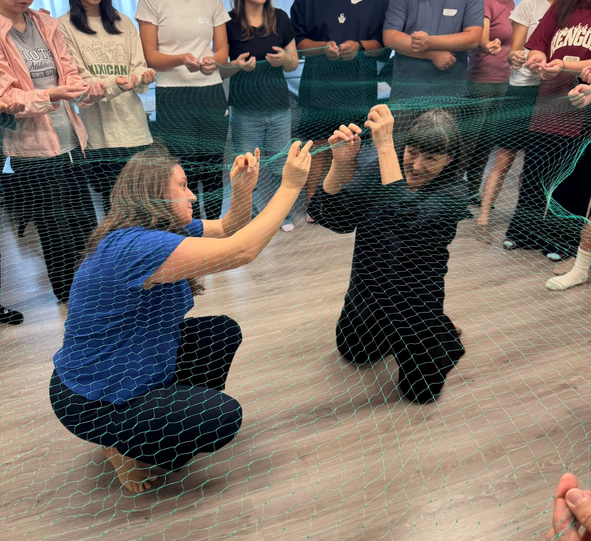

Scar work day3
Scar work day3
今天真的硬核，真夠狠，直接請主辦單位宏甫研究室找了16+15個有疤痕的個案直接來現場，讓我們直接把前兩天學到的技巧操作在個案上，疤痕的程度從輕到嚴重的都有，有跌倒擦傷的，也有車禍截肢的，每道疤痕都是一個故事，非常感激這些個案願意來到現場跟我們分享這些疤痕背後的故事。
Jan老師就是要我們當場學以致用，真的要我們把這技術學起來。
教室空間雖然很開闊很舒服，但短時間湧進這麼多有疤痕的個案，多個個案同時操作，有些無法言喻的情緒記憶與能量瞬間釋放，真的是會蠻難受的，空間的氣場、氛圍，真的不好消化與應付。 不知道是不是靠近中午我肚子餓了，處理到一半真的直接頭暈、想吐，我自己也很少遇到這種反應。
老師教我們用想像的方式、透過純粹、中立的念頭來保護自己，該消毒洗手的環節都不能少，畢竟要先把自己照顧好，才能辦法透過這技術幫助個案，而《黃帝內經》裡也有一段異曲同工的經文，也是告誡醫者在進入場域前，透過冥想各方的顏色、能量來罩護自己再進行醫療術式。
治療師具備各種療癒的能力，但首要任務就是要做好防護措施，避免身心靈各方面受到傷害。
今天我與同組夥伴處理的個案，一個是運動國手，因腱鞘囊腫手術及術後清創的疤痕；另一個也是運動員，因一次運動過程高空降落時沒踩穩，傷到十字韌帶而開刀。兩位處理後，在疤痕外觀與主動活動角度與感受上都明顯進步，因個資與隱私問題，就沒有私下拍照紀錄，而統一由助教與主辦方處理。
疤痕的修復與解纏，是一個漫長耗時的過程，除了形而下的沾黏拆解，也需要同時處理形而上藏在疤痕傷口裡的情緒記憶與故事，就像共同與個案再次開啟一個需要十足勇氣面對的過去，釋放情緒的過程也同時療癒了自己。
明天還有一輪的個案實戰，Let’s see what we can do!!
#scarwork
中醫師 黃彥鈞

